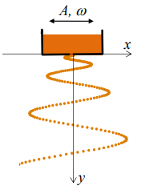
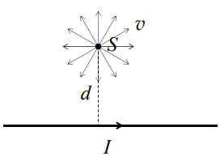
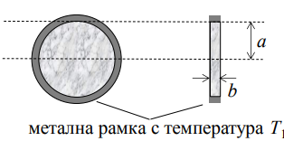

Задача 1. Падащ пясък
Кутия, пълна с пясък, трепти хармонично в хоризонтално направление с амплитуда $A$ и кръгова честота $\omega$ (фиг. 1). Пясъкът изтича от малък отвор в дъното на кутията. Можете да приемете, че песъчинките се отделят една след друга, без да се удрят помежду си. Съпротивлението на въздуха се пренебрегва. Земното ускорение е $g$.
-
Падащият пясък оформя специфична вълниста струя, както е показано на фиг. 1. Получете уравнението $x = x(y)$, което описва формата на струята в момента, когато кутията минава през равновесното си положение, движейки се надясно. Началото на координатната система съвпада с положението на отвора в този момент. [6 т]
-
Кутията се намира на височина $H$ над пода. Приемете, че падащите песъчинки залепват за пода, без да отскачат от него. Колко е дължината $L$ на образуваната върху пода пясъчна следа? [4 т]

Задача 2. Магнитен капан

Източник $S$ на положителни йони с еднаква маса $m$ и еднакъв заряд $q$ се намира на разстояние $d$ от праволинеен проводник, по който тече ток $I$(фиг. 2). Йоните се излъчват с еднаква по големина скорост $v$ във всички възможни посоки в равнината, в която лежат източникът и проводникът.
-
Определете минималното ($r_{\min}$) и максималното ($r_{\max}$) разстояние до проводника, които може да бъдат достигнати от йоните. [5 т]
-
На общ чертеж изобразете качествено траекториите на йоните, достигащи съответно минимално и максимално разстояние до проводника. [2 т]
-
Ако скоростта на йоните е толкова малка, че $|r_{\max} - r_{\min}| \ll d$, движението на йоните може да се разглежда приблизително като обикаляне по окръжност, чийто център бавно се премества с определена “дрейфова” скорост $v_d$ ($v_d \ll v$) успоредно на проводника. Получете приблизителен израз за дрейфовата скорост на йон, излъчен перпендикулярно на проводника. [3 т]
Задача 3. Топлинна леща
При падане на интензивен лазерен сноп върху плоска полупрозрачна пластинка е възможно преминалата светлина да се “самофокусира” в определена точка зад пластината. Този ефект, наречен “топлинна леща”, се дължи на неравномерното загряване на пластината и се наблюдава във вещества, чийто показател на пречупване нараства при повишаване на температурата.
Тънка кръгова пластинка с радиус $a = 5.0 \mathrm{~mm}$ и дебелина $b = 0.5 \mathrm{~mm}$ се намира в топлинен контакт с кръгова метална рамка, чиято температура се поддържа постоянна и равна на стайната температура $T_1$ (фиг. 3). Материалът на пластинката има коефициент на топлопроводност $k = 1.0 \mathrm{~W.m^{-1}.K^{-1}}$ и показател на тречупване, който зависи от температурата по закона: $$n(T) = n_1 + \gamma(T-T_1)$$ където $n_1 = 1.50$ е показателят на пречупване на материала при стайна температура, а $\gamma = 2.5 \times 10^{-4} \mathrm{~K^{-1}}$ е т.нар. температурен коефициент на показателя на пречупване, характерен за дадения материал. Върху пластината пада нормално успореден лазерен сноп с интензитет $I = 10 \mathrm{~mW.mm^{-2}}$, който е постоянен по цялата осветена повърхност на пластинката. Половината от падащата светлинна енергия се поглъща от материала на пластината. Топлообменът на пластината с околния въздух се пренебрегва.

-
Получете функционалната зависимост $T(r)$ на температурата $T$ на пластината от разстоянието $r$ до нейния център. Колко е разликата $\Delta T$ между температурата в центъра на пластината и по нейната периферия? [5 т]
-
Ако приемете, че изменениeто на показателя на пречупване на пластината поради нейното загряване е сравнително малко, получете приблизителен израз и пресметнете числено фокусното разстояние $f$ на тази леща. [5 т]